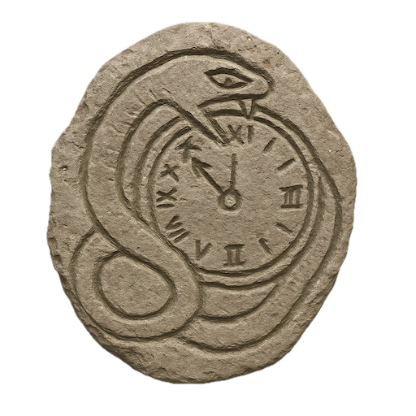

Dr Cross &
the Serpent Codex
Digging up Danger, with
Dr Mara Cross

Digging up Danger, with
Dr Mara Cross
You are Dr Mara Cross, a renowned archaeologist. One humid morning in 2025, a package arrives at your door. The oilcloth binding is tied with hand-twisted cord, your address written in shaky capitals. No stamps.
You recognize the handwriting. Professor Harlan Marsh—officially dead for three years, lost in the Yucatán hunting the Serpent Codex, a book that promises immortality. Inside: his field journal, most pages dissolved to pulp. But three lines survive, scratched in charcoal:
Your hands go cold. Folded in the journal's spine: a letter, the ink changing color three times, the pressure varying from steady to desperate.
Professor Harlan Marsh
I got it out before they found me. The Codex is real, and worse than the stories. I've hidden it in three locks.
The Circle knows about you now. They'll come offering help—university credentials, resources, money. Do not trust them. The book changes people. Like something breathing on the back of your neck in an empty room. Solve the first lock. Then decide. Only you have the mind to see this through. —H
Clipped to the letter: a photograph. Harlan, gaunt, standing before a moss-covered wall. Behind him—a stone serpent, eyes catching the flash like glass. On the back: coordinates in the Yucatán, and one line:
You remember the last real conversation. You told him to stop chasing legends. He smiled: "What if legends are just history that survived?" Now you walk to the window. The street looks normal. Except—a dark sedan you don't recognize. Has it been there before? You close the curtains.
Two days later, the temple emerges through jungle like a tooth through gums. Limestone strangled by vines, rust-colored water bleeding from cracks. You packed rope and a machete, telling yourself you're just confirming the coordinates. But you know better.
The serpent carving dominates the entrance, coiled around the doorway. Its jade eyes are wrong—too bright, like light shines through from behind. You touch one. Colder than the surrounding stone. The doorway exhales, carrying the smell of copper and decay.
For a moment, you're stuck. The serpent stares back, unmoving. This is a riddle. "The Serpent sees what you bring, not what you are." What did Harlan mean? What are you supposed to bring?
You hold up Harlan's photograph. Nothing. Then—click. Deep in the wall. Stone shifts beneath the serpent's jaw. A passage opens, darkness waiting.
The passage forces you to duck. Twenty feet in, it opens to a chamber no bigger than a closet. Three walls: ancient Mayan glyphs. The fourth wall: recent work. Cleaner cuts. Different tools. A 9×9 grid carved in limestone, jade pegs filling some squares.
Harlan made this. He didn't just find the Codex—he locked it himself.
From the passage behind you: footsteps. Multiple. Trying to be quiet. Failing.
You recognize it—Harlan's Grid of Nine. He'd sketch these on napkins during lunch, challenging you before your coffee cooled. "A properly ordered mind sees the pattern," he'd say. "Chaos hides in the gaps."
Your flashlight catches scratches around certain numbers. Deliberate marks. Harlan showing you something.
Do not trust them. Maybe three minutes left.
Final number placed. Three guardian faces carved in the wall rotate. All turn center. Their mouths open. A compartment springs free—one you didn't see before.
Inside: a jade serpent pendant. More journal pages. And beneath, carved in stone:
Serpent coiled around clock face. Roman numerals. Crude carving—Harlan wasn't an artist. But you remember. His seminar on encoding. "Symbols carry multiple meanings. The trick is knowing which layer to read."
The Grid gives numbers. The Cipher gives meaning. Combine them. Unlock the next chamber.
Unlock Chapter 2 Next!